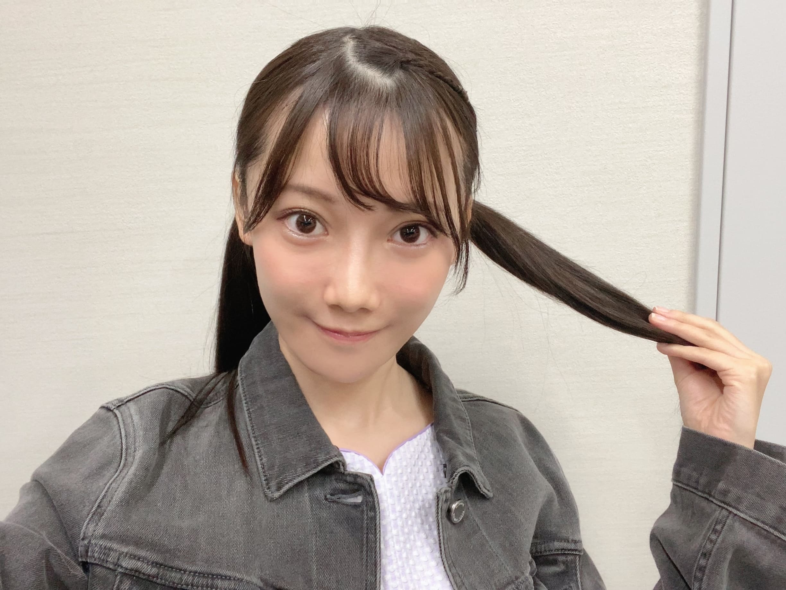
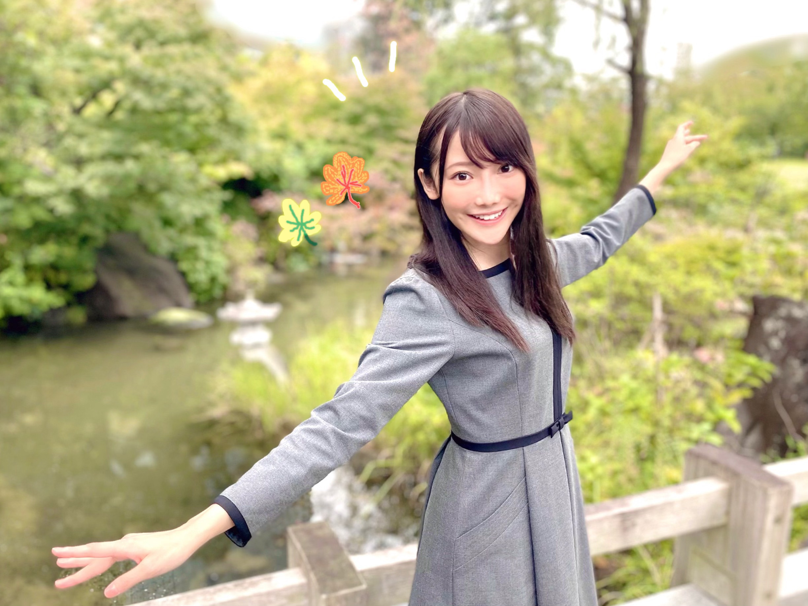
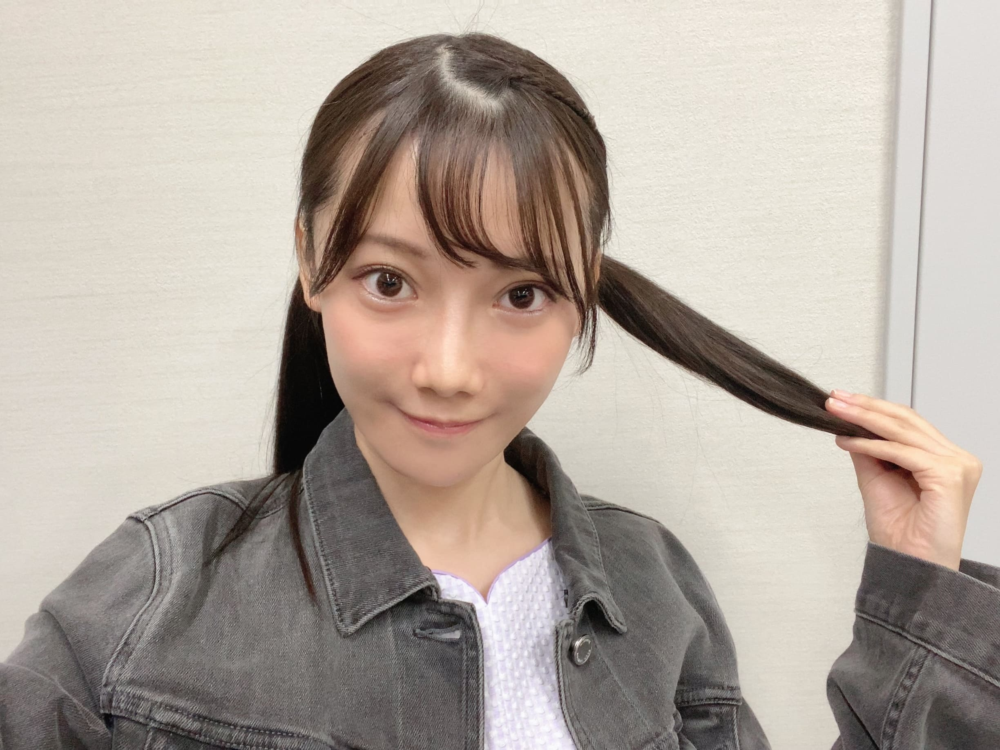
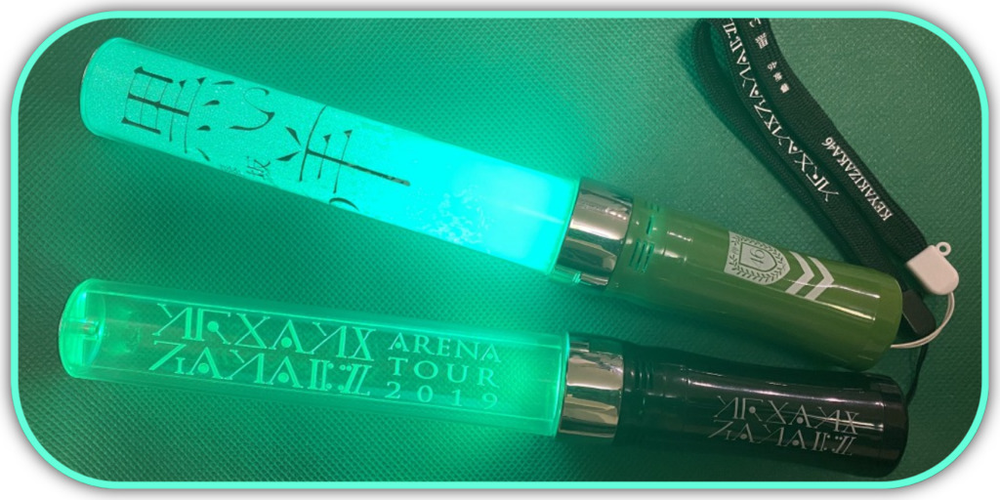

| 2020/10 14 Wed | だって、乃木坂が大好きなんだもん ☺︎ 黒見明香 (16) |
今週もあと半分、今日も一日 お疲れ様でした✩︎⡱
ココを見つけてくださり ありがとうございます♪
乃木坂46 新４期生の黒見明香です。
すこーしだけ自己紹介させてください☺︎
♪:*:･･:*:･･:*:･･:*:･･:*:･･:*:･♪:*:･･:*:･･:*:･･:*:･･:*:･･:*:･♪
黒見 明香（くろみ はるか）
2004年1月19日生まれ 16才
香港生まれ・東京都出身です
あだ名： くろみん・黒見ちゃん
3の倍数9・6・3(くろみ)
と覚えてもらえたら嬉しいです♪
＊
↓頂いたコメントからー
◎黒歴史多すぎてヤバいね 笑アニメ作ってほしいわ 笑笑
⚫︎くろみんが「らじらー！」で着ていたという、Ｇジャン姿が気になっています(笑)どんな感じだろう?
♪:*:･･:*:･･:*:･･:*:･･:*:･･:*:･♪:*:･･:*:･･:*:･･:*:･･:*:･･:*:･♪

-:-:୨୧:-:- 「らじらー！サンデー」との時に着ていた"ジージャン(デニムジャケット)"だよ〜♪ 古着のグレーを乃木坂カラーのワンピースにはおってみたんだよー☺︎

ブログやお手紙で、たくさんのコメントや感想送って下さり
本当にありがとうございます✩︎⡱
今回、初めてコメントしたんだー！というあなたも、
今日はこんな事があったよー！と報告して下さるあなたも、
大切な時間を使ってお話しして下さり
本当にありがとうございます✨
あなたに出逢えた奇跡に、感謝しながら、
大事に、一つずつ全部読ませて頂いています((〃ω〃))
皆さんのことを知ることが出来る、
私の１日の中で『１番幸せな時間』です♩
直接お話しできる時が、 待ち遠しいです✩︎⡱
＊
⚫︎くろみんのブログを読んでたら心が温かくなって、泣きたくなっちゃいました。
最近、心がとっても疲れちゃったので
なんだか風邪気味だよー、疲れちゃったよーって方も
本当に、今日も一日 お疲れ様でした✩︎⡱
きっと心も、身体も、しんどい時もあるかと思います。。
どうぞ、皆さんが 少しでも
ひとときリラックスできますように...✩︎⡱
と願っています(*´-`)
初めて会える日を、楽しみに待っています♪
＊
明日は、カフェで働くエプロン姿も
読んでくださり、本当にありがとうございます☺︎
次回も、会えたら嬉しいなぁ✨
またねヾ(･ω･*)
くろみはるか☺︎
☆ 本日のあなたのラッキーナンバー：❶ と ❾
♪:*:･･:*:･･:*:･･:*:･･:*:･･:*:･♪:*:･･:*:･･:*:･･:*:･･:*:･･:*:･♪
・
・
・
＜ちょこっとアンコール♬笑＞
今回は、前回載せられなかった、ゲームコーナーだよー！
明日 10月15日は堀未央奈さん♡
のお誕生日ですね✩︎⡱
ココを見つけてくださり ありがとうございます♪
乃木坂46 新４期生の黒見明香です。
すこーしだけ自己紹介させてください☺︎
♪:*:･･:*:･･:*:･･:*:･･:*:･･:*:･♪:*:･･:*:･･:*:･･:*:･･:*:･･:*:･♪
黒見 明香（くろみ はるか）
2004年1月19日生まれ 16才
香港生まれ・東京都出身です
あだ名： くろみん・黒見ちゃん
3の倍数9・6・3(くろみ)
と覚えてもらえたら嬉しいです♪
＊
↓頂いたコメントからー
◎黒歴史多すぎてヤバいね 笑アニメ作ってほしいわ 笑笑
アニメ化・・・！？
一回30秒の、ゆる〜いおバカシリーズになりそうですね\(//∇//)\
♬ *。♩*。♬
小学生の頃、サンタクロースさんに
『願いが叶うステッキ（自分で描いた図解入り）』が
欲しいというお手紙を書きました。
押すと「かんじテスト100てん」「おなかいっぱいたべられる」...
というボタンがたくさん付いています。
＊
クリスマスの朝、ドキドキワクワクしながら靴下を覗くと
『そのすてっきは、きみの心のなかにあるんだよ さんた 』
というカードだけが入っていました・・・・Σ（ﾟдﾟll）ええーっ
未だに納得のいっていない思い出です...( ´_ゝ`)うっ〜笑
♪:*:･･:*:･･:*:･･:*:･･:*:･･:*:･♪:*:･･:*:･･:*:･･:*:･･:*:･･:*:･♪

-:-:୨୧:-:- もう秋も折り返しだよ〜！いつか、皆んなと紅葉見に行きたいな〜♬
【 らじらー！サンデー✨ 】
初出演！緊張していた生放送、聴いてくださった方、
メッセージ下さった方、本当にありがとうございます！
「RAP で教えてNOGIZAKACHAN」
「くろみんに必殺技を授けよう！」
「妄想握手会」
「声も◯◯◯らしく」
と、送ってくださったメッセージや面白いアイディア、
＃でつぶやいてくれたり、コメント書いてくれたりと、
あなたが助けてくれたから、初めてのラジオ生放送も、
１時間、お送りすることができましたー (*ˊᵕˋ*)੭✨
＊
MCの藤森さんはもちろん✨
前後の大園桃子さん♡久保史緒里さん♡
あたたかな番組に関わってくださる皆さんが
サポートして下さって、力を下さったおかげで、
緊張しながらも、とても楽しい時間を過ごさせて頂きました✩︎⡱
＊
⚫︎ 初めての生放送がまさかの1対1でびっくりでした！
本当ですね☺︎なかなかない貴重な経験ですよね！笑
＊
⚫︎「らじらー!」でもしっかりメモをとる、真面目なくろみんが好きです(*'▽')
⚫︎ 必殺技はとりあえず握手会で全部やってほしいな！
握手会でも、皆んなとぎゅっと濃い時間を過ごしたいな〜って
たくさんメモさせてもらったよー！
くろみにゃん♡・・・披露するまで待っててね\(//∇//)\笑
＊
わたしもメモを取っていたのですが、
始まる前のお時間も、スタジオの藤森慎吾さんは
すごい勢いで台本に記入したり、調べたりされているお姿を
モニター越しに拝見していました。
（乃木坂メンバーはリモート出演をしているので、
画面は見えるのですが、音は聞こえないのです(*´-`)）
"こうして、いつもリスナーのおにい達との、
充実した「らじらー」の時間を作るために、
全力で尽くされているんだ！"と
圧倒されていました。。。
＊
私も、楽しい番組に出来るよう、
たくさん勉強してパワーアップしようと思いましたヾ(･ω･*)o
大好きな番組「らじらー！サンデー」に
出演させて頂いたことを心から感謝しています♪
来週は、美佑ちゃんだよー！楽しみですね✨
＊
⚫︎ツインテールと言えばひめたん、私の永遠の推しです。
中元日芽香さん♡が長らくMCを務められていた番組に、
初出演させていただいて、心から感激しています。
日芽香さんの真っ直ぐなひたむきさ、迫力のあるパフォーマンス...
大好きな、ずっとずっと憧れの先輩です☺︎
⚫︎久保史緒里さんが、番組後に、
「いろいろと不安だと思うけれど、少しでも力になれたら嬉しい。頑張ろうね」
というメッセージを下さって、心も美しくて、後輩へのあたたかい言葉に感動していました。
仙台セミナーで「自分らしくいるのが一番だよ」というお話を伺って２年半、
ジーンとしていました...✩︎⡱
♬ *。♩*。♬
⚫︎ラジオで読まれた初めてのメールがこのメールだった事、涙が止まりませんでした。この先一生忘れません。つらくなった時に聴き返せば、いくらでも頑張れる気がします。
⚫︎ラジオで読まれた初めてのメールがこのメールだった事、涙が止まりませんでした。この先一生忘れません。つらくなった時に聴き返せば、いくらでも頑張れる気がします。
わたしも、メッセージ送って下さった、皆んなの想いに心から感謝して、感動しています。
読ませていただきましたーちゃんと届いています (*ˊᵕˋ*)੭
わたしもいっぱい乃木坂からパワーを貰ってきた一人だよー✨
これからも、一緒に坂を一歩一歩上りながら、
かけがえのない思い出をいっぱいつくろうね☺︎✨
♬ *。♩*。♬
⚫︎ 次はおにい達待望の妹祭りだね（笑）是非「妹祭り」に出てね～!
「妹祭り」是非、出演できたら嬉しいなぁ(*´-`)
それまでに"妹らしい♡" セリフをたくさん考えて練習しなきゃだね✩︎⡱
♬ *。♩*。♬
⚫︎くろみんが「らじらー！」で着ていたという、Ｇジャン姿が気になっています(笑)どんな感じだろう?
↓こんな感じだったよ〜 (*ˊᵕˋ*)੭
♪:*:･･:*:･･:*:･･:*:･･:*:･･:*:･♪:*:･･:*:･･:*:･･:*:･･:*:･･:*:･♪

-:-:୨୧:-:- 「らじらー！サンデー」との時に着ていた"ジージャン(デニムジャケット)"だよ〜♪ 古着のグレーを乃木坂カラーのワンピースにはおってみたんだよー☺︎
★ 週末は「オンライン ミート&グリート」
参加される皆さん、素敵な想い出ができますように〜✨
＊
⚫︎握手会待ってるけどオンラインでもいいから1度お話してみたいです！
わたしも！！！
ずっと、初めての握手会そして
オンライン ミート&グリート、とっても心待ちにしてるよー♬
⚫︎黒見ちゃんと笑い合えるような内容を考えていきたいなと思ってます。
⚫︎初めての握手会、黒見ちゃんでもイイですか？
わたしも初めてー\(//∇//)\笑
ありがとう！どうぞむずかしく考えないで、
リラックスして、ただ来てくれたら、座っててくれたら、、、
もうその気持ちが、本当に嬉しいし、胸いっぱいだよー><
♪:*:･･:*:･･:*:･･:*:･･:*:･･:*:･♪:*:･･:*:･･:*:･･:*:･･:*:･･:*:･♪
-:-:୨୧:-:- め、、メガネ、、、！！？？
【 ノギザカスキッツ✨ 】
制服もさくちゃんも可愛すぎる「恋愛シスターさくら」、
「保険ポリスは許さない」劇場版も！？という新展開、
奈於ちゃん＆美佑ちゃん姉妹も大活躍でしたね〜☺︎
⚫︎予告にくろみん出ていましたね! 眼鏡におさげ髪で、「かつ」...かな?(笑)
⚫︎ メガネ姿みてまた来週楽しみだなって弓木ちゃんと同じ気持ちだよ(笑)
来週うまくできたかなぁ、、、て
来週うまくできたかなぁ、、、て
ドキドキ心配だけど、、、
今まで見せたことない姿？少しでも殻を破れるよう挑戦してみたので、
よかったら見て欲しいなぁ・・・((〃ω〃))
＊
ちなみに、普段学校では、後ろの席の時は
べっこう模様の眼鏡をかけたりしているよー！
時々曇っちゃうけど笑、メガネ＆マスクで過ごしてるんだよ〜☺︎
♪:*:･･:*:･･:*:･･:*:･･:*:･･:*:･♪:*:･･:*:･･:*:･･:*:･･:*:･･:*:･♪

-:-:୨୧:-:- 欅坂46「THE LAST LIVE」胸がいっぱいです。。。
【 欅坂46 「THE LAST LIVE」 】
⚫︎くろみんは今日の欅坂46ラストライブ観ますか？感想聞かせてーー！
アツいアツい二日間。
会場フロアを大きく使って曲の世界観を表現されていて、
曲間の演出も驚きの連続で、息を呑んで見守っていました。
サイリウムはじっと強く握りしめて・・・
幕を閉じる欅坂、卒業するメンバーへの想いが伝わってきて、
気迫に圧倒され、心が揺さぶられました。
"黒い羊"を新2期を含む、全メンバーで表現していた光景にも胸がアツくなりました。
（連絡もしましたよー！）
＊
櫻坂46として、また新しい真っ白な一歩を踏み出されるお姿も、
これから本当に楽しみです(*´-`)✨
♬ *。♩*。♬
⚫︎中田花奈さんの写真集『好きなことだけをしていたい 』の発売日だね✨
くろみんはもうチェックしたのかな？
青空にブルーのドレス、ゴールドのアクセサリーに真紅のリップ、
本当に美しくて、カッコ良くて、、、
大好きな一冊です。大切に保管しながら、時々眺めています(*´-`)
♬ *。♩*。♬
⚫︎まいやんのメモリアルマガジン買うのー？
もちろんです\(//∇//)\ 予約しましたよー！笑
⚫︎くろみちゃんは、絢音ちゃんの舞台見ますか？
鈴木絢音さんの舞台『銀河鉄道の父』明日初日✨ですね！
Weiboでご一緒させていただいた時に、
すごく優しいお話をして下さった絢音さん。
わたしもライブ配信で！じっくり見させて頂くよー☺︎
♬ *。♩*。♬
10月15日は、堀未央奈さんお誕生日✩︎⡱
あたたかいお話をして下さったり、
オシャレなお洋服やアイテムを譲ってくださったり、、、
ストイックに努力されるお姿、
女の子の憧れの全て✨を叶えてらっしゃる
大好きすぎる先輩です((〃ω〃))
どうぞ未央奈さんにとって、
ますます楽しいことがいっぱいの
幸せな一年になりますように・・・✩︎⡱
♬ *。♩*。♬
⚫︎葉月ちゃんがモバメでくろみん～と話せてめっちゃ楽しかったって言ってたよ？
先日、向井葉月さん♡とやっと！念願の！
野球トークをさせていただいて、わたしも本当に楽しくて嬉しかったです((〃ω〃))
「フレンド」を目指して、
プレイステーションを買うために、
お小遣いを貯めることにしました (*ˊᵕˋ*)੭
・・・ひょっとしてサンタさんまだ来てくれるないかなぁ...汗
♪:*:･･:*:･･:*:･･:*:･･:*:･･:*:･♪:*:･･:*:･･:*:･･:*:･･:*:･･:*:･♪
ブログやお手紙で、たくさんのコメントや感想送って下さり
本当にありがとうございます✩︎⡱
今回、初めてコメントしたんだー！というあなたも、
今日はこんな事があったよー！と報告して下さるあなたも、
大切な時間を使ってお話しして下さり
本当にありがとうございます✨
あなたに出逢えた奇跡に、感謝しながら、
大事に、一つずつ全部読ませて頂いています((〃ω〃))
皆さんのことを知ることが出来る、
私の１日の中で『１番幸せな時間』です♩
直接お話しできる時が、 待ち遠しいです✩︎⡱
＊
⚫︎くろみんのブログを読んでたら心が温かくなって、泣きたくなっちゃいました。
最近、心がとっても疲れちゃったので
大丈夫だよー!! よく頑張ったね (. ≧ω≦)ﾉ
いっぱい頑張ってると
しんどくなっちゃう時、必ずあるよね><
よかったら、コメントにでもそのまま気楽に
書いてってね☺︎
それですこーしでも気持ちが整理されたり、
また明日すこーしがんばろうて気持ちになれたら
すごく嬉しいよ(*´-`)
いろんなことがあるけれど・・・
一緒に頑張れたら嬉しいな✩︎⡱
＊
台風どうぞくれぐれも気をつけて><
雨が続いたり、寒くなってきちゃって、
なんだか風邪気味だよー、疲れちゃったよーって方も
本当に、今日も一日 お疲れ様でした✩︎⡱
きっと心も、身体も、しんどい時もあるかと思います。。
どうぞ、皆さんが 少しでも
ひとときリラックスできますように...✩︎⡱
と願っています(*´-`)
初めて会える日を、楽しみに待っています♪
＊
明日は、カフェで働くエプロン姿も
すっごく可愛い璃果ちゃんですよー♬
読んでくださり、本当にありがとうございます☺︎
次回も、会えたら嬉しいなぁ✨
またねヾ(･ω･*)
くろみはるか☺︎
☆ 本日のあなたのラッキーナンバー：❶ と ❾
♪:*:･･:*:･･:*:･･:*:･･:*:･･:*:･♪:*:･･:*:･･:*:･･:*:･･:*:･･:*:･♪
・
・
・
＜ちょこっとアンコール♬笑＞
今回は、前回載せられなかった、ゲームコーナーだよー！
その他のお話は、次回✨ちゃんとメモしてるから笑
五日間だけ待っててね♡
♬ *。♩*。♬
＜ゲームコーナーだよ〜☺︎✨＞
⚫︎黒見ちゃんはゲームは毎日ログインしてる？？
⚫︎プロスピイベントやってる？
⚪︎最近はなかなか時間がなくて毎日はログインとかイベントできてないよ〜！みんなも忙しいと思うけど、がんばろうね☺︎
⚫︎プロスピのイベントの強敵は自分の苦手なリアル軌道になっていてめちゃくちゃ苦労してます。
⚪︎私も前回の対決カーニバルの時、苦労してたなぁ〜
また次の時もがんばろうね☺︎
⚫︎いよいよアニバが近づいてきたね
自分は取りに行く選手決めたけどくろみんは決めた？
⚪︎選択契約書を2回引こうと思ってて、そのうち1回分は、決めたけどもう1回はまだ迷ってるよ〜！
⚫︎ウイイレでの最近の補強ポイントを教えてください
⚪︎DMFを今までベンチにいた選手と交換したくらいかなぁ〜 2021早く来て欲しいなぁ☺︎
⚫︎どうぶつの森頑張ってます！
⚪︎私も買える日は、アメを買うようにしてるよ〜
一緒にハロウィンまで頑張ろうね☺︎
⚫︎乃木恋でくろみんの彼氏になりたくて頑張ってます
⚪︎あなたも一緒に乃木恋がんばろうね！
彼氏になってくれるの嬉しいなぁ☺︎
⚫︎プロ野球の試合見に球場行ったことある？
あるよー！
⚪︎ホームランボールでもファウルボールでもとってみたいなぁ☺︎
⚫︎最近知ったサッカーや野球のルールありますか？
⚪︎スイッチヒッターのバッターの打席変更はルール上何回でもできるっていうルールだよ！
♬ *。♩*。♬
大学や中間テスト、研究や検定試験や英検頑張ってるよー！お仕事やアルバイト、休日出勤してる！て方もお疲れ様です！大変だけど、一緒に頑張ろうねーヾ(･ω･*)o
RADIO FISHさんのこと、お団子ヘア屋氷室京介さんの曲のこと、BLEACHの刀のこと、乃木神社行ったよーていう報告、オウケンブルースリのストーリーもありがとうございます！
RADIO FISHさんのこと、お団子ヘア屋氷室京介さんの曲のこと、BLEACHの刀のこと、乃木神社行ったよーていう報告、オウケンブルースリのストーリーもありがとうございます！
一つ一つ大切に読ませていただいてるよー✩︎⡱
♬ *。♩*。♬
のお誕生日ですね✩︎⡱
そして、お誕生日を迎えるあなたへ・・
✨HAPPY BIRTHDAY✨
どうぞ素敵な一年になりますよう✩︎⡱
♪:*:･･:*:･･:*:･･:*:･･:*:･･:*:･♪:*:･･:*:･･:*:･･:*:･･:*:･･:*:･♪
ここまで読んでくださったアナタ、ほんとうにありがとう♡
またねヾ(･ω･*)
どうぞ素敵な一年になりますよう✩︎⡱
♪:*:･･:*:･･:*:･･:*:･･:*:･･:*:･♪:*:･･:*:･･:*:･･:*:･･:*:･･:*:･♪
ここまで読んでくださったアナタ、ほんとうにありがとう♡
またねヾ(･ω･*)
コメント(229)
2020/10/14 18:12
コメント(229)
黒見ちゃんお久しぶりです！夢です！
全然コメントできてなくてごめんね( ᵒ̴̶̷᷄௰ᵒ̴̶̷᷅ )
ブログも全部読んでるしらじらーも聴いたよ！！
いつも黒見ちゃんのブログに癒されてます！ありがとう！
ちょうど1週間後に入試があってすごく緊張してます、、
黒見ちゃんは緊張がほぐれる方法とかってありますか？？
いい結果を報告できるように頑張るね！！
全然コメントできてなくてごめんね( ᵒ̴̶̷᷄௰ᵒ̴̶̷᷅ )
ブログも全部読んでるしらじらーも聴いたよ！！
いつも黒見ちゃんのブログに癒されてます！ありがとう！
ちょうど1週間後に入試があってすごく緊張してます、、
黒見ちゃんは緊張がほぐれる方法とかってありますか？？
いい結果を報告できるように頑張るね！！
こんばんは。
いつもくろみんのブログ、
楽しませてもらっています
グレーのワンピース可愛いですね
最初、まだ新シングルを出していないのに
新制服がお披露目になったのかと
思ってしまいました。
とても似合っていて可愛いかったです
くろみんに質問です！
・乃木坂の制服と歌衣装で着てみたいものを
それぞれトップ3まで教えて下さい
今、検査技師(PCRが出来る職種です！)の国家試験を来年に控えていて国試対策を頑張っています
今日、模試が終わったのですが、全然合格点に
届きません･･･。
頑張れるよう応援して頂けると嬉しいです
いつもくろみんのブログ、
楽しませてもらっています
グレーのワンピース可愛いですね
最初、まだ新シングルを出していないのに
新制服がお披露目になったのかと
思ってしまいました。
とても似合っていて可愛いかったです
くろみんに質問です！
・乃木坂の制服と歌衣装で着てみたいものを
それぞれトップ3まで教えて下さい
今、検査技師(PCRが出来る職種です！)の国家試験を来年に控えていて国試対策を頑張っています
今日、模試が終わったのですが、全然合格点に
届きません･･･。
頑張れるよう応援して頂けると嬉しいです
くろみん、こんばんは！
コメント、失礼します！
今日は寒くなったねー。
少し暖房を付けたよ。
繰り返しで申し訳ないけど、体調管理には気を付けてね。
葉月ちゃんとお話し出来たんだね。
野球好き同士としてこれから更に仲良くなると良いね。
プレステ買えるように頑張ろうね笑笑
最近は忙しいんだね。
俺も同じで、自分もプロスピ出来てないなー。
Series2の選手がどんどん出てるから獲りたいんだけどね。
アニバはちゃんと取りに行きたいし、時間が出来たらまたちゃんとやりたいなー。
それでは、この辺で。
おやすくろみんー
コメント、失礼します！
今日は寒くなったねー。
少し暖房を付けたよ。
繰り返しで申し訳ないけど、体調管理には気を付けてね。
葉月ちゃんとお話し出来たんだね。
野球好き同士としてこれから更に仲良くなると良いね。
プレステ買えるように頑張ろうね笑笑
最近は忙しいんだね。
俺も同じで、自分もプロスピ出来てないなー。
Series2の選手がどんどん出てるから獲りたいんだけどね。
アニバはちゃんと取りに行きたいし、時間が出来たらまたちゃんとやりたいなー。
それでは、この辺で。
おやすくろみんー
くろみん
こんばんはー☺
今日は１日雨で結構寒かったね！
本当にお互いに体調には気をつけようね！
昨日は、Mステ前にコメントしてあの後見ました！まいやんが選んだ3曲とも自分も好きで特にシンクロニシティが１番好きなんだよね☺️
まいやんの曲に対する表現力、グループとしてのパフォーマンスが本当に綺麗でいつも見とれてしまいます！乃木中でボンバーマンをやって無邪気な笑顔を見せてくれるまいやんも大好きだけどね(笑)(笑)
乃木坂のホームページでスキッツの次回予告見たけどくろみんは地味な同級生やるんだね！
月曜日が本当に楽しみです！
明日のみゅうちゃんのらじらーも楽しみだよ！
またコメントするね☺️
こんばんはー☺
今日は１日雨で結構寒かったね！
本当にお互いに体調には気をつけようね！
昨日は、Mステ前にコメントしてあの後見ました！まいやんが選んだ3曲とも自分も好きで特にシンクロニシティが１番好きなんだよね☺️
まいやんの曲に対する表現力、グループとしてのパフォーマンスが本当に綺麗でいつも見とれてしまいます！乃木中でボンバーマンをやって無邪気な笑顔を見せてくれるまいやんも大好きだけどね(笑)(笑)
乃木坂のホームページでスキッツの次回予告見たけどくろみんは地味な同級生やるんだね！
月曜日が本当に楽しみです！
明日のみゅうちゃんのらじらーも楽しみだよ！
またコメントするね☺️
くろみん更新ありがとう╰(*´︶`*)╯♡
自己紹介もありがとう(*´꒳`*)
悲しいクリスマスの思い出だね(ﾟoﾟ;;
今回もたくさんのくろみんの事を知れて嬉しいです✌︎('ω'✌︎ )
欅坂46のラストライブ2日間とも観ました〜
新2期生のみなさんも頑張っていましたね！
素敵なパフォーマンスでした♪(๑ᴖ◡ᴖ๑)♪
櫻坂46としてのこれからも楽しみですね＼＼\\٩( 'ω' )و //／／
みおなちゃんお誕生日おめでとうございます！
素敵な1年になりますように･:*+.\(( °ω° ))/.:+
ラッキーナンバーもありがとう！
また更新お待ちしております
自己紹介もありがとう(*´꒳`*)
悲しいクリスマスの思い出だね(ﾟoﾟ;;
今回もたくさんのくろみんの事を知れて嬉しいです✌︎('ω'✌︎ )
欅坂46のラストライブ2日間とも観ました〜
新2期生のみなさんも頑張っていましたね！
素敵なパフォーマンスでした♪(๑ᴖ◡ᴖ๑)♪
櫻坂46としてのこれからも楽しみですね＼＼\\٩( 'ω' )و //／／
みおなちゃんお誕生日おめでとうございます！
素敵な1年になりますように･:*+.\(( °ω° ))/.:+
ラッキーナンバーもありがとう！
また更新お待ちしております
くろみん
こんばんは。
今日も一日お疲れ様！
寒かったね。しばらく曇りや雨が続くみたい…
なので、「鍋」を食べました。
キムチ鍋( ´∀`)ホクホク
くろみんは、好きな「鍋」ありますか？
奈於ちゃんが、怜奈さんの「おはつちゃん」に出ていました。
いや～、奈於ちゃんは面白いですね(笑)
ダンスしていたり、YouTube風の所とか…笑ってしまった。
料理は凄い上手で、美味しそう～φ(．．)
くろみんも、いつか出演して欲しいな!
どんな「ロケ」をしてみたいかな？
「ノギザカスキッツ」楽しみにしてます。
眼鏡姿が、新鮮!
ちょっと朝ドラに出てきそう(笑)
自分もマスクと眼鏡で仕事をしているので、曇るの凄い、分かる!
べっこう模様は、お洒落なイメージだ。
自分のはシンプルな黒です( ´∀`)
紅葉。
富山の「黒部峡谷」に行って見たことがあります。
まるで「絵画」の中の世界みたいで凄く綺麗だった…
また行きたいな。
この写真の私服が、とても似合っていて可愛いです!!
では、またねﾉｼ
#183
こんばんは。
今日も一日お疲れ様！
寒かったね。しばらく曇りや雨が続くみたい…
なので、「鍋」を食べました。
キムチ鍋( ´∀`)ホクホク
くろみんは、好きな「鍋」ありますか？
奈於ちゃんが、怜奈さんの「おはつちゃん」に出ていました。
いや～、奈於ちゃんは面白いですね(笑)
ダンスしていたり、YouTube風の所とか…笑ってしまった。
料理は凄い上手で、美味しそう～φ(．．)
くろみんも、いつか出演して欲しいな!
どんな「ロケ」をしてみたいかな？
「ノギザカスキッツ」楽しみにしてます。
眼鏡姿が、新鮮!
ちょっと朝ドラに出てきそう(笑)
自分もマスクと眼鏡で仕事をしているので、曇るの凄い、分かる!
べっこう模様は、お洒落なイメージだ。
自分のはシンプルな黒です( ´∀`)
紅葉。
富山の「黒部峡谷」に行って見たことがあります。
まるで「絵画」の中の世界みたいで凄く綺麗だった…
また行きたいな。
この写真の私服が、とても似合っていて可愛いです!!
では、またねﾉｼ
#183
雨ですね。
こんな静かな雨の夜は、
極上のバラードが聴きたくなります。笑
乃木坂46の楽曲なら、
「ないものねだり」
なんて、イイなぁ…。
遅ればせながら、
「らじらーサンデー」
その日は思いの外、作業がはかどって、
リアタイで存分に堪能出来ました！
嬉しかったです！
単純に。
黒見ちゃんにとっては、初の生放送、
しかも藤森さんとの1対1での放送ということで、
色々と大変だったことかと思いますが、
ラジオを通しても黒見ちゃんの誠実な人柄が、
ものすごく伝わってきました。
それに…
楽しかったぁ！
こんなにあっという間の1時間は、久しぶりかもしれません。
黒見ちゃん…
本当にありがとうございます！
リスナー(ファン)の熱量も、ものすごかったですよねっ♪
ファンの皆さんのメールには、黒見ちゃんへの愛が溢れていて、
いちファンの僕にとっても嬉しい時間で、
とても感動して聴き入ってしまいました！
ふふふ。
くろみにゃん。
これ…！
楽しみすぎるんですケド。
僕ね、猫って生き物は、
神様がこの世に遣わした、天使だと思っているんです。
本気で大好き。
そして、何より…
「 HAPPY BABY 」の黒見ちゃん。
そのふたつが合わさった「くろみにゃん」
もう…！
大天使クロミカエルの誕生じゃないですか。
これは、ヤバイ。
ホントに。
握手会などで、期待しちゃいますよ？笑
あ！でも、
ミドルネームは、RACHEL でしたもんねっ♪
クロミカエルは、だいぶセンス無いよなぁ…。照
そうそう！
ツインテール、Gジャン、紫と白のワンピースのオフショットも
とてもお似合いで、素敵だと思います。
僕もデニムジャケットは、お気に入りのアイテムで、
ワイルドにもキレイめにも、
アクセサリーの用い方によっては、
ロックにもなるトコロが大好きです。
万能ですよね！
また、私服や衣装のオフショットなどがありましたら、
載せて頂いてもよろしいですか？
ところでね、
黒見ちゃんは、コーヒーは飲めるようになりましたか？
以前にコーヒーは、まだ飲めないとブログで仰っていたような気がして。
僕は、どんなに少なくても1日に5・6杯は飲むんです。
多い時は、10杯以上の日もあります。
まるで、
僕がコーヒーなのか、
コーヒーが僕なのか、
って。笑
なんかね、チェーンになっちゃうんです。
飲んだら注いで、注いだらまた飲んでって感じで。
それにコーヒーって、僕にとっては、
リラックスが出来る上に頭も冴えて、
毎日に於いて、欠かせない飲み物なんですよね。
まぁ、飲み過ぎは、良くないと思いますケド。
黒見ちゃんにも、いつかは、
コーヒーの良さを知って頂きたいなぁ…と。
たぶん、難しい顔した頑固そうなオヤジがやってる
それでいて、目が合うと優しい眼差しを送ってくれる、
そんな昔ながらの喫茶店で、
コーヒーを試してみたらイイかもしれませんよ？
そんなお店のマスターは、
わからないコトがあったら、聞けばちゃんと教えてくれます。
さて、
最近は寒さに、身が震えるような日々が続いておりますが、
どうか体調には、お気をつけてお過ごし下さいね。
宜しければ、またコメントさせていただきたいなぁ…
と、思っています。
それでは、また！
ブログありがとう！
最初の写真、自然で楽しそうでかわいい！
確かにひめたんはツインテールのイメージ強いよね！
くぼしも優しいよね！多分ファンだからクロミンの緊張してる感じとかわかってくれそうな気がするな
ノギザカスキッツのメガネも可愛いし今から楽しみだわー
これは三つ編み？なのかな？クロミンの三つ編みも珍しい気がするからもっと見たいな
欅のライブも凄かったね 世界観に圧倒されたよ
絢音ちゃんの舞台俺も見たよー
絢音ちゃんが1人の女優として舞台に出てて、さらに俺は見てる時に世界観に入り込めたから感動したなぁ
久しぶりに方言も聞いたな
千秋楽まで走り抜けて欲しいな
葉月とどんなお話したのか教えて欲しいな
未央奈もインスタで、掛橋ちゃんと黒見ちゃんから誕プレもらったって書いてたよー
先輩と少しずつ話せるようになってきてるのかな？
またあ先輩とのエピソードできたら教えて欲しいな
また質問出てきたらかく
最初の写真、自然で楽しそうでかわいい！
確かにひめたんはツインテールのイメージ強いよね！
くぼしも優しいよね！多分ファンだからクロミンの緊張してる感じとかわかってくれそうな気がするな
ノギザカスキッツのメガネも可愛いし今から楽しみだわー
これは三つ編み？なのかな？クロミンの三つ編みも珍しい気がするからもっと見たいな
欅のライブも凄かったね 世界観に圧倒されたよ
絢音ちゃんの舞台俺も見たよー
絢音ちゃんが1人の女優として舞台に出てて、さらに俺は見てる時に世界観に入り込めたから感動したなぁ
久しぶりに方言も聞いたな
千秋楽まで走り抜けて欲しいな
葉月とどんなお話したのか教えて欲しいな
未央奈もインスタで、掛橋ちゃんと黒見ちゃんから誕プレもらったって書いてたよー
先輩と少しずつ話せるようになってきてるのかな？
またあ先輩とのエピソードできたら教えて欲しいな
また質問出てきたらかく
今ゲーム開いて質問思いついたから書きますー
ウイイレ2021出たけどクロミンはもうアップデートした？クロミンは2021もやる？
俺はやる予定だからクロミンもやってくれるといいな
ウイイレ2021出たけどクロミンはもうアップデートした？クロミンは2021もやる？
俺はやる予定だからクロミンもやってくれるといいな
最近寒いっすね〜
黒見さん、おはようございます。
今日は松尾さんが初のらじらー出演ですね。
らじらーの先輩としてなにかアドバイスはされましたか？
一方で花奈さんにとってはラストのらじらーになりますね。
なにか時の流れを感じてしまいます。
急に冷え込んできたためか鼻風邪気味です。
鼻が少しグスグスするぐらいで味覚や嗅覚に異常はありませんが最近は少しでも風邪のような症状があると不安になりますね。
黒見さんもお気をつけください。
それでは今日も良い１日を！
今日は松尾さんが初のらじらー出演ですね。
らじらーの先輩としてなにかアドバイスはされましたか？
一方で花奈さんにとってはラストのらじらーになりますね。
なにか時の流れを感じてしまいます。
急に冷え込んできたためか鼻風邪気味です。
鼻が少しグスグスするぐらいで味覚や嗅覚に異常はありませんが最近は少しでも風邪のような症状があると不安になりますね。
黒見さんもお気をつけください。
それでは今日も良い１日を！
おはよ
もうすぐハロウィンですね
ハロウィンって何を祝う祭り何ですか？
(´･ω･｀)知らんがなが
くろみんにして貰いたいコスプレは
ペストドクターですね
多分、乃木坂ではまだ誰もやってないと
思うし、今後もやることはないと思います
さてさて、これから年末にかけて
音楽番組が増えるので
乃木坂を観る機会が増えて嬉しいです♪
まいやんの卒業コンサートも
入手困難なオリジナル特典付きの
プラチナ視聴チケットを入手いたしました
ふふふ、、、みんなに自慢しよう
でも、どんなコンサートになるんですかね？
観客もいないし、
メンバーが淡々と曲を披露する感じ？
せっかく、まいやんの最後の晴れ舞台だから
みんなで盛り上がりたいなぁ。。。
もうすぐハロウィンですね
ハロウィンって何を祝う祭り何ですか？
(´･ω･｀)知らんがなが
くろみんにして貰いたいコスプレは
ペストドクターですね
多分、乃木坂ではまだ誰もやってないと
思うし、今後もやることはないと思います
さてさて、これから年末にかけて
音楽番組が増えるので
乃木坂を観る機会が増えて嬉しいです♪
まいやんの卒業コンサートも
入手困難なオリジナル特典付きの
プラチナ視聴チケットを入手いたしました
ふふふ、、、みんなに自慢しよう
でも、どんなコンサートになるんですかね？
観客もいないし、
メンバーが淡々と曲を披露する感じ？
せっかく、まいやんの最後の晴れ舞台だから
みんなで盛り上がりたいなぁ。。。
俺もくろみんと乃木坂が大好きなんだもん 
明日のブログも楽しみにしてるよーん
くろみ〜ん
こんにちは！
せっかくコメント書いたのに送れてなかったみたい泣泣
そ、そんな〜(涙)
今気づいたよ、、
そう言えば、コメント送信する前に寝ちゃってた｡ﾟﾟ(´□︎`｡)°ﾟ｡ﾜｰﾝ!!
もう何コメントしてたかそんなに覚えてない…
ごめんね、、。
--------☆
ハロウィンの生写真
ハロウィンの生写真、くろみん可愛かったよ〜！！早くゲットしたい！！！衣装可愛いよね！
あと！くろみんの私服好きだよ♡
--------☆
黒歴史たくさんだね…4コマ漫画とか作れるんじゃない？(笑)
--------☆
最近、日向坂46の
『アザトカワイイ』にハマってるよ〜
可愛いよね！
あの人間飛び箱(?!)のやつ可愛い♡
くろみんも『アザトカワイイ』好き〜？
--------☆
昨日、検定があったよ〜！
どうか合格してますように！！
今週末の検定も頑張るよ！！
--------☆
話バラバラで申し訳ないです。
読みにくいかな…？
またくるね！
最後まで読んでくれてありがとう！


あきかより
こんにちは！
せっかくコメント書いたのに送れてなかったみたい泣泣
そ、そんな〜(涙)
今気づいたよ、、
そう言えば、コメント送信する前に寝ちゃってた｡ﾟﾟ(´□︎`｡)°ﾟ｡ﾜｰﾝ!!
もう何コメントしてたかそんなに覚えてない…
ごめんね、、。
--------☆
ハロウィンの生写真
ハロウィンの生写真、くろみん可愛かったよ〜！！早くゲットしたい！！！衣装可愛いよね！
あと！くろみんの私服好きだよ♡
--------☆
黒歴史たくさんだね…4コマ漫画とか作れるんじゃない？(笑)
--------☆
最近、日向坂46の
『アザトカワイイ』にハマってるよ〜
可愛いよね！
あの人間飛び箱(?!)のやつ可愛い♡
くろみんも『アザトカワイイ』好き〜？
--------☆
昨日、検定があったよ〜！
どうか合格してますように！！
今週末の検定も頑張るよ！！
--------☆
話バラバラで申し訳ないです。
読みにくいかな…？
またくるね！
最後まで読んでくれてありがとう！
あきかより
くろみんお疲れ様
チェキが当たったきよたです
最近付け足しが多くてごめんなさい
未央奈ちゃんの誕生日にさーちゃんとプレゼントした
花束が乃木坂カラーとくろみんのサイリウムカラーで素敵でした！
あれは凄くセンスあるね～
アクセもシンプルでかなり可愛かったよ！
チェキが当たったきよたです
最近付け足しが多くてごめんなさい
未央奈ちゃんの誕生日にさーちゃんとプレゼントした
花束が乃木坂カラーとくろみんのサイリウムカラーで素敵でした！
あれは凄くセンスあるね～
アクセもシンプルでかなり可愛かったよ！
かつ家の眼鏡黒見ちゃん早く見たいワン
くろみんこんばんは。
自分はまだほうかしきえんの治療中です。
毎日内科に通院しているけど、
腫れが全然引いていなくて立って
体重をかけるだけで辛くて歩けないので
内科に向かうまでがめちゃくちゃ辛いです。
幸い内科は家の近くにあり徒歩２分なので
まだ良かったのですがそれでもきついです。
何とか抗菌薬で原因菌を速めに完全になくし
たいなぁと思っています。
さて今回のブログについてのコメントの続きを
書きます。
●握手会について書いてあるけど、
いつかくろみんに会える日が来るといいなぁと
思っています。
●ブログに写真が載っているけど
眼鏡に三つ編みのくろみん可愛いなぁ
と思いました。
●くろみん欅坂46さんのラストライブ
観たんだね。
くろみんが刺激を受けて良かったです。
確かに櫻坂46として真っ白な１歩を
踏み出すのも自分も楽しみにしています。
●中田さんの写真集買ったんだね。
くろみんすごいなぁと思いました。
●葉月さんが「くろみんと話せて楽しかった」
とモバメで言っていたんだね。
念願だった野球トークを葉月さんと
することが出来て良かったね。
フレンドになれるといいね。
そのためにプレステを買うために
お小遣いを貯める事にしたんだね。
くろみん偉いなぁと思いました。
サンタさんまだ来てくれるといいね。
それではこの辺で。
またコメントします。
自分はまだほうかしきえんの治療中です。
毎日内科に通院しているけど、
腫れが全然引いていなくて立って
体重をかけるだけで辛くて歩けないので
内科に向かうまでがめちゃくちゃ辛いです。
幸い内科は家の近くにあり徒歩２分なので
まだ良かったのですがそれでもきついです。
何とか抗菌薬で原因菌を速めに完全になくし
たいなぁと思っています。
さて今回のブログについてのコメントの続きを
書きます。
●握手会について書いてあるけど、
いつかくろみんに会える日が来るといいなぁと
思っています。
●ブログに写真が載っているけど
眼鏡に三つ編みのくろみん可愛いなぁ
と思いました。
●くろみん欅坂46さんのラストライブ
観たんだね。
くろみんが刺激を受けて良かったです。
確かに櫻坂46として真っ白な１歩を
踏み出すのも自分も楽しみにしています。
●中田さんの写真集買ったんだね。
くろみんすごいなぁと思いました。
●葉月さんが「くろみんと話せて楽しかった」
とモバメで言っていたんだね。
念願だった野球トークを葉月さんと
することが出来て良かったね。
フレンドになれるといいね。
そのためにプレステを買うために
お小遣いを貯める事にしたんだね。
くろみん偉いなぁと思いました。
サンタさんまだ来てくれるといいね。
それではこの辺で。
またコメントします。
くろみん、こんばんは！
コメント、失礼します！
なおちゃんが出てたおはつちゃんを見ました。
タワマンの生活に憧れながらも、安売りやお徳用を買ったりして庶民感が溢れてしまうところが可愛かったね。
天然さもあって、良さが出てたなーと思ったよ。
そして、なおちゃんは初めてのロケと言ってたけど、くろみんはまだだよね？
初めてのロケは何をしたいですかね？
美佑ちゃんのらじらーも聴きました。
可愛らしくて素晴らしかったよね。
この後は乃木坂工事中。
まいやんのラスト、楽しみたいですね。
そして、明日はブログ更新日！
気長に待ってますよー。
それでは、この辺で。
おやすくろみんー
コメント、失礼します！
なおちゃんが出てたおはつちゃんを見ました。
タワマンの生活に憧れながらも、安売りやお徳用を買ったりして庶民感が溢れてしまうところが可愛かったね。
天然さもあって、良さが出てたなーと思ったよ。
そして、なおちゃんは初めてのロケと言ってたけど、くろみんはまだだよね？
初めてのロケは何をしたいですかね？
美佑ちゃんのらじらーも聴きました。
可愛らしくて素晴らしかったよね。
この後は乃木坂工事中。
まいやんのラスト、楽しみたいですね。
そして、明日はブログ更新日！
気長に待ってますよー。
それでは、この辺で。
おやすくろみんー
頑張ったからか 平均48くらいの物理のテスト75とれてて
嬉しかったよ～！
私最初黒見ちゃんのブログみて、なんて丁寧な女の子なんだ...！！！ってなったの思い出す！
私も黒見ちゃんみたいに頑張り屋さんで
丁寧な女の子になれたかな？？？笑
♪。.:＊・゜♪。.:＊・゜♪。.:＊・゜
あと、昨日の乃木坂 Mステ見たかな？？
私は釘付けでした...！
白石麻衣さんが特に本当に美しくて どこか寂しさも覚え、、
乃木坂って凄いんだなって改めて思ったよ～！
♪。.:＊・゜♪。.:＊・゜♪。.:＊・゜
私は 今話したい誰かがいるがとても好きな曲なので
それもあって嬉しかったよ笑！！
黒見ちゃんは 制服のマネキンが推し曲かな？？
♪。.:＊・゜♪。.:＊・゜♪。.:＊・゜
ごめんね～(><)夜ご飯の時間だ(；；)
また来るね！
黒見ちゃん︎︎☺︎りん︎︎☺︎